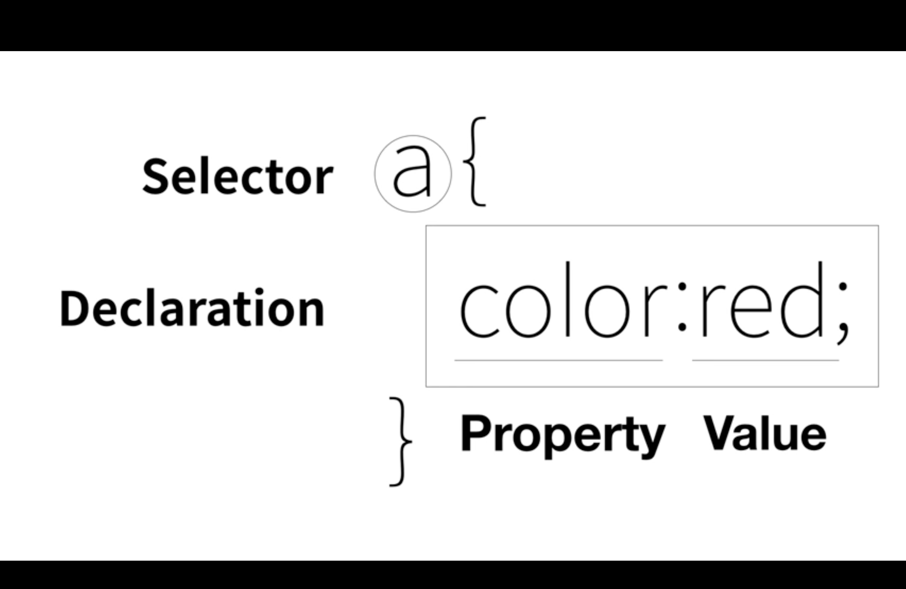

css
Cascading Style Sheets (CSS) is used to format the layout of a webpage.
With CSS, you can control the color, font, the size of text, the spacing between elements,
how elements are positioned and laid out, what background images or background colors are to be used,
different displays for different devices and screen sizes, and much more!
css 웹을 꾸며주기
기본적으로 html명령을 사용하므로 css라는 새로운 명령을 사용하려면 style로 지정해서 사용한다세미클론; 사용하는 이유는 color:red; text-decoration: none; 등 각 명령을 구분하기 위해서 사용한다
css colors
css text align

색상이 중복으로 적용될경우 가장 가까운 명령으로 선택된다. 그래서 id, class등 명령을 이용하면 우선순위를 정할수 있다.
id(#)>class(.)>태그
css selector박스모델

인터넷창에서 마우스 우클릭-검사를 클릭하면 위 그림창 처럼 나온다. Elements에서 각 항목에 마우스 커서를 올리면 색깔로 표시가 나오는데 아래 박스모양으로 어떤부분이 여백이 있는지 알수가 있다.
반응형 디자인
인터넷 창이 800px이하로 줄어들때 media(max-width:800px)의 명령을 사용하여 특정 조건일때 디자인을 다르게 표현할수 있다.예를들어 모바일 화면 같이 작은 창일때 좀더 보기편한 디자인으로 변경이 가능하다.